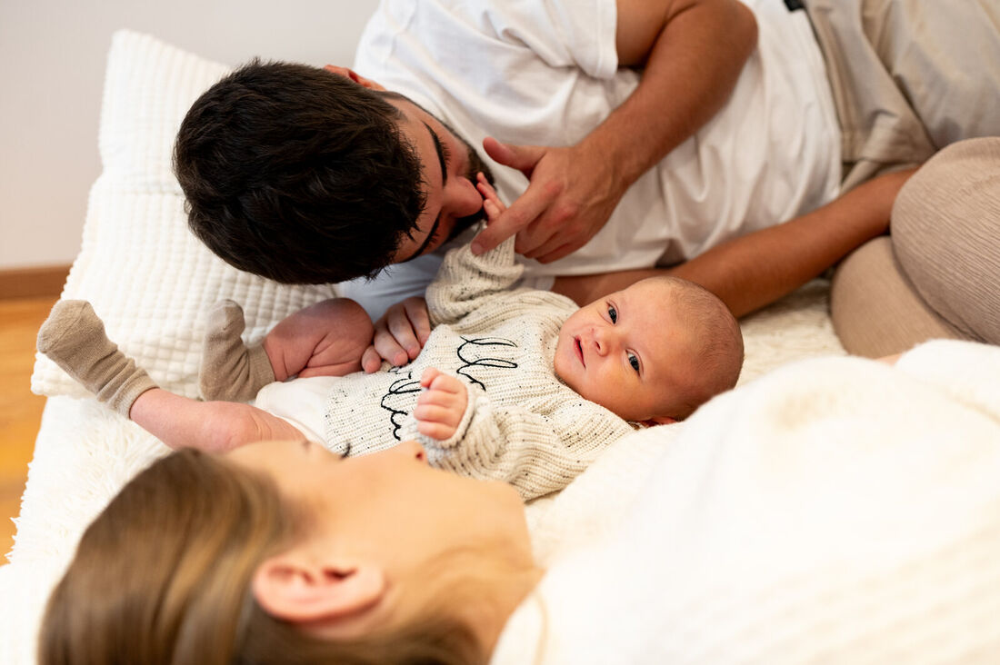
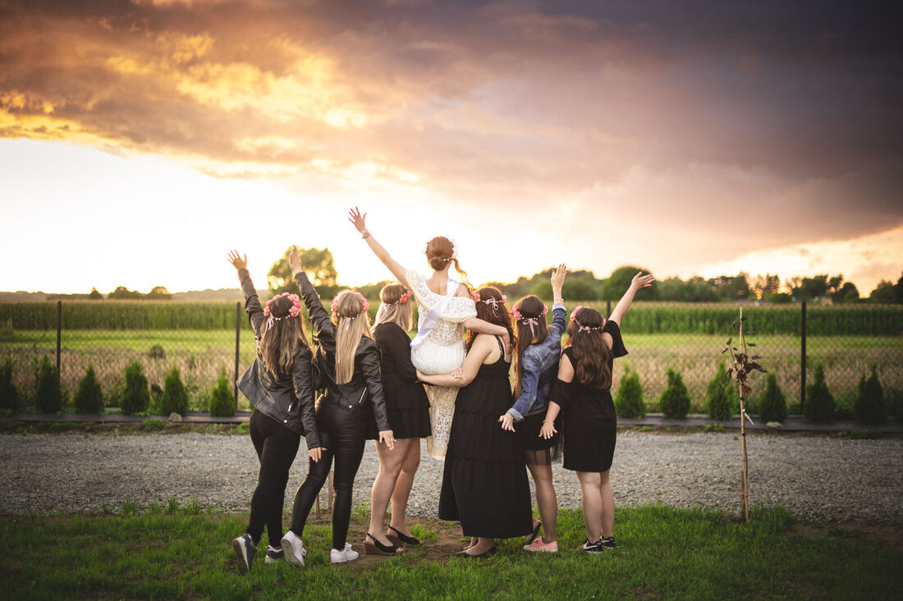

Reportaż z chrztu — o czym warto pomyśleć wcześniej
Kilka rzeczy, które ustalone tydzień wcześniej sprawiają, że w dniu chrztu nikt nie musi się niczym przejmować.
Czytaj dalej
Sesja noworodkowa — kiedy ją zrobić i jak się przygotować
Najlepszy termin, przygotowanie mieszkania i dlaczego sesja w domu wypada naturalniej niż w studiu.
Czytaj dalej
Wieczór panieński z fotografem — jak to naprawdę wygląda
Reportaż, sesja z koleżankami i mini plener dla panny młodej. Co się dzieje przez te dwie godziny i o czym warto pomyśleć wcześniej.
Czytaj dalej